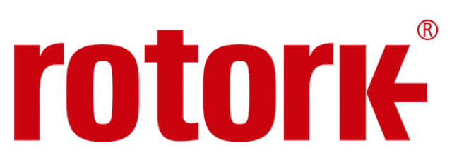

Xuất xứ: Vương quốc Anh
Rotork là nhà sản xuất bộ truyền động van (valve actuator) và thiết bị kiểm soát lưu chất hàng đầu thế giới — từ bộ truyền động điện thông minh cho van chặn, van điều tiết, đến bộ truyền động khí nén, thuỷ lực, hộp số van và thiết bị đo lường điều khiển đi kèm.
Fast Group Engineering cung ứng sản phẩm Rotork chính hãng tại Việt Nam — hỗ trợ đọc nameplate, tra cứu model, chọn cấu hình theo momen và chế độ vận hành thực tế, cung cấp tài liệu kỹ thuật và báo giá theo đúng mã đặt hàng.
Fast Group vận hành website chuyên ngành riêng cho thương hiệu này: tra cứu thư viện hơn 700 model và dải sản phẩm Rotork theo 21 nhóm kỹ thuật — có thông số từng dòng, biến thể model và gửi yêu cầu báo giá theo cấu hình.
Tra cứu thêm thông số & model: rotork.com.vn
Ví dụ một model cụ thể cho van bi và van bướm: bộ truyền động điện part-turn IQT3 Pro — IP66/68, cấu hình SIL2/SIL3, tới 1.200 lần khởi động mỗi giờ.
Rotork bắt đầu hoạt động năm 1957 với bộ truyền động đầu tiên mang tên 100A. Nhà máy tại Brassmill Lane, Bath (Anh) được xây dựng năm 1961 và đến nay vẫn là trụ sở chính của hãng. Rotork chuyển từ công ty tư nhân sang công ty đại chúng và niêm yết trên Sàn giao dịch chứng khoán London từ năm 1968.
Hiện Rotork có hơn 3.500 nhân sự, phục vụ khách hàng tại 140 quốc gia, tổ chức theo ba mảng thị trường: Oil & Gas, Water & Power và Chemical, Process & Industrial (CPI) — đúng ba nhóm ngành mà Fast Group tập trung phục vụ tại Việt Nam.
Điểm khiến Rotork trở thành chuẩn mực trong ngành là triết lý cài đặt không xâm nhập (non-intrusive): toàn bộ hành trình, momen giới hạn và cấu hình tín hiệu được thiết lập qua bộ điều khiển cầm tay hoặc Bluetooth mà không cần mở nắp khoang đấu nối — giữ nguyên cấp bảo vệ IP và chứng nhận phòng nổ ngay cả khi hiệu chỉnh ngoài hiện trường trong điều kiện thời tiết xấu.
Rotork chia danh mục theo nguồn năng lượng (điện, điện-thuỷ lực, khí nén/thuỷ lực) và theo kiểu chuyển động van — multi-turn cho van cổng và van cầu, part-turn cho van bi và van bướm. Bảng dưới tóm tắt các nhóm chính Fast Group cung ứng tại Việt Nam.
| Nhóm / Dòng | Nguồn năng lượng | Kiểu chuyển động | Đặc điểm chính | Ứng dụng điển hình |
|---|---|---|---|---|
| IQ3 Pro / IQ3 Perform | Điện | Multi-turn (IQ3) & part-turn (IQT3) | Bộ truyền động thông minh, cài đặt không xâm nhập, datalogger, khoang đấu nối kín kép | Van chặn trên đường ống công nghệ, đầu giếng, trạm bơm |
| CK Range | Điện | Multi-turn & part-turn | Kết cấu mô-đun, chọn bộ điều khiển theo nhu cầu (CKc / CKa / CKr) | Ứng dụng công nghiệp phổ thông, thay thế nâng cấp từng phần |
| ELC Range | Điện | Tuyến tính | Bộ truyền động điện tuyến tính, nhiều cấp lực đẩy | Van tuyến tính, cơ cấu chấp hành trong dây chuyền |
| CMA · CVA · LA-2000 · SM | Điện | Tuyến tính, part-turn & multi-turn | Điều tiết chính xác, độ phân giải cao, chạy điều chế liên tục không giới hạn | Vòng điều khiển lưu lượng, áp suất, mức trong quá trình công nghệ |
| Skilmatic SI | Điện-thuỷ lực | Multi-turn & part-turn | Tích hợp bơm thuỷ lực trong thân, lò xo hồi vị an toàn khi mất nguồn | Van đóng ngắt khẩn cấp ESD, ứng dụng cần fail-safe theo SIL |
| Heavy / Light Duty Fluid Actuators | Khí nén & thuỷ lực | Part-turn & tuyến tính | Kết cấu scotch-yoke momen lớn (heavy duty) và rack-and-pinion gọn nhẹ (light duty) | Van cỡ lớn trên tuyến ống, van ESD khí nén trên giàn |
| Hộp số van | Cơ khí | Multi-turn & part-turn — IB, IS, MTW, DSB, HOB, HOS, SPI | Giảm lực vận hành tay, hoặc làm bộ giảm tốc trung gian cho bộ truyền động | Van cổng, van bướm, van bi cỡ lớn vận hành tay hoặc bằng máy |
| Thiết bị đo lường & điều khiển | — | — | Bộ định vị van (positioner), van điện từ, van đo lường, công tắc hành trình, bộ phát vị trí, master station | Hoàn thiện cụm van: định vị, phản hồi vị trí, kết nối mạng điều khiển |
Thư viện trên website chuyên ngành hiện có 775 hồ sơ model và dải sản phẩm, trong đó 701 sản phẩm đang hiển thị theo 21 nhóm kỹ thuật. Xem chi tiết các biến thể của dòng bộ truyền động điện thông minh IQ3 Pro, nhóm bộ truyền động điều tiết chính xác gồm bốn dải CMA, CVA, LA-2000 và SM hoặc bảy dải hộp số van multi-turn.
Van ESD trên giàn khai thác và trạm xử lý — ưu tiên bộ truyền động có lò xo hồi vị an toàn, chứng nhận ATEX/IECEx và cấp bảo vệ chống ăn mòn khí quyển biển. Hồ sơ thường yêu cầu chứng chỉ SIL kèm báo cáo đánh giá.
Tự động hoá van trên tuyến công nghệ và cụm gia nhiệt; bộ truyền động điều tiết cho vòng điều khiển nhiệt độ và lưu lượng. Dữ liệu datalogger giúp phát hiện van bị kẹt hoặc tăng momen bất thường trước khi sự cố xảy ra.
Van hơi chính, van cấp nước lò hơi, van xả — môi trường nhiệt cao và rung, cần bộ truyền động kín tốt và chịu được chu kỳ đóng mở dày trong vận hành điều chế.
Van tại trạm bơm, bể chứa, nhà máy xử lý — thường vận hành từ xa qua mạng điều khiển. Nhóm ứng dụng này ưu tiên độ bền ngoài trời, chống ngập tạm thời và chi phí bảo trì thấp trong nhiều năm.
Van tuyến ống dài, trạm van dọc tuyến với nguồn điện hạn chế — dùng bộ truyền động khí nén hoặc điện-thuỷ lực, kết hợp hộp số để đạt momen lớn trên van cỡ lớn.
Thay bộ truyền động cũ trên van đang vận hành mà không thay van — cần đối chiếu mặt bích lắp ghép theo ISO 5210 / ISO 5211, hành trình, momen yêu cầu và kiểu tín hiệu điều khiển của hệ cũ.
Van cổng và van cầu quay nhiều vòng cần bộ truyền động multi-turn; van bi và van bướm quay một phần tư vòng cần part-turn. Momen yêu cầu phải lấy từ nhà sản xuất van ở điều kiện chênh áp thiết kế, không suy từ đường kính danh nghĩa. Sau đó chọn bộ truyền động có momen định mức dư một khoảng an toàn, vì momen phá kẹt (breakaway) khi van lâu ngày không vận hành luôn cao hơn momen chạy bình thường.
Đây là điểm hay bị bỏ sót và gây hỏng sớm nhất. Bộ truyền động chuẩn được thiết kế cho chế độ on-off, số lần khởi động mỗi giờ giới hạn. Ứng dụng điều tiết liên tục theo tín hiệu 4-20 mA có thể đạt hàng nghìn lần khởi động mỗi giờ — phải chọn đúng dòng modulating (IQM, CVA, CMA) với động cơ và bộ ly hợp chịu được chu kỳ đó, nếu không động cơ sẽ quá nhiệt và cháy trong vài tháng.
Nếu tại vị trí lắp không có nguồn điện ba pha ổn định, hoặc yêu cầu van phải tự về vị trí an toàn khi mất nguồn, thì bộ truyền động điện thuần không giải quyết được. Khi đó dùng bản điện-thuỷ lực có lò xo hồi vị tích hợp, hoặc bộ truyền động khí nén lò xo đơn tác động — nêu rõ trạng thái an toàn là fail-closed hay fail-open ngay trong RFQ vì hai cấu hình khác nhau về cơ khí.
Với Zone 1/2 hoặc Zone 21/22, cần bản chống cháy nổ đạt ATEX/IECEx đúng nhóm khí và cấp nhiệt độ của khu vực. Về điều khiển, cần chốt sớm là đấu tín hiệu cứng (hard-wired) hay nối mạng — Modbus, Profibus, HART hay mạng Pakscan hai dây — vì lựa chọn này quyết định card giao tiếp bên trong bộ truyền động và không đổi được sau khi xuất xưởng.
Bộ truyền động Rotork phần lớn được sản xuất theo đơn chứ không có sẵn tồn kho, vì mỗi mã là một tổ hợp riêng của momen, tốc độ, điện áp, kiểu tín hiệu, giao thức mạng và chứng nhận vùng nguy hiểm. Thời gian sản xuất vì thế phụ thuộc cấu hình và thời điểm đặt hàng — hãy cho biết mốc tiến độ dự án ngay trong RFQ để Fast Group xác nhận lại với nhà máy trước khi anh chốt kế hoạch thi công.
Hộp số van và phụ kiện lắp ghép thường có thời gian ngắn hơn bộ truyền động. Fast Group xử lý trọn gói khâu nhập khẩu và thông quan — xem chi tiết dịch vụ nhập khẩu & logistics và hỗ trợ kỹ thuật sau bán hàng.
Fast Group Engineering cung ứng sản phẩm Rotork chính hãng tại Việt Nam và vận hành website chuyên ngành rotork.com.vn một cách độc lập nhằm hỗ trợ tra cứu model và báo giá — đây không phải website chính thức của Rotork. Chúng tôi hỗ trợ kỹ thuật chọn cấu hình, cung cấp tài liệu và xử lý nhập khẩu, kèm đầy đủ chứng từ xuất xứ và chất lượng theo lô hàng.
Được, và đó là cách nhanh nhất. Nameplate Rotork chứa model, momen định mức, điện áp, số serial và mã cấu hình — đủ để xác định mã thay thế tương đương. Gửi ảnh chụp rõ nameplate kèm ảnh mặt bích lắp ghép. Tham khảo thêm hướng dẫn cách đọc nameplate Rotork để tra đúng model.
Điểm hay bị hiểu nhầm: khác biệt không nằm ở momen — các biến thể multi-turn tương đương của hai dòng có cùng dải momen. Khác biệt thật nằm ở số biến thể có sẵn: IQ3 Pro có thêm bản tốc độ cao tự hãm (IQ3H), bản tương thích SyncroSET (IQ3SET) và bản ngõ ra tuyến tính (IQ3ML) mà danh mục IQ3 Perform hiện không có. Ở nhóm part-turn, IQT3 Perform bắt đầu từ mức momen thấp hơn IQT3 Pro. Rotork định vị Perform là mức nhập môn chi phí thấp hơn của nền tảng IQ3 và không phải khu vực nào cũng có — nên xác nhận tình trạng cung cấp cho Việt Nam trước khi chốt thiết kế. Xem so sánh chi tiết giữa hai dòng IQ3 Pro và IQ3 Perform.
Không nên. Bộ truyền động on-off có giới hạn số lần khởi động mỗi giờ, trong khi vòng điều khiển liên tục có thể yêu cầu hàng nghìn lần khởi động mỗi giờ. Dùng sai sẽ làm động cơ quá nhiệt và hỏng sớm. Ứng dụng điều tiết phải dùng dòng modulating chuyên dụng như IQM, CVA hoặc CMA.
Được, nếu khớp giao diện lắp ghép. Cần kiểm tra mặt bích theo ISO 5210 (multi-turn) hoặc ISO 5211 (part-turn), kích thước và kiểu trục van, hành trình, momen yêu cầu và kiểu tín hiệu điều khiển của hệ hiện có. Trường hợp lệch chuẩn có thể chế tạo bộ chuyển đổi (adaptor kit) — gửi bản vẽ hoặc kích thước đo thực tế để chúng tôi kiểm tra.
Phần lớn bộ truyền động được sản xuất theo đơn hàng vì mỗi mã là một tổ hợp cấu hình riêng, nên thời gian phụ thuộc cấu hình cụ thể và lịch sản xuất tại thời điểm đặt. Hãy nêu mốc tiến độ dự án ngay trong RFQ để chúng tôi xác nhận lại với nhà máy. Liên hệ qua trang liên hệ hoặc gọi (+84) 938 888 958.
Gửi ảnh nameplate, model hoặc mô tả nhu cầu — Fast Group hỗ trợ tra model, chọn cấu hình, báo giá, nhập khẩu và chứng từ.